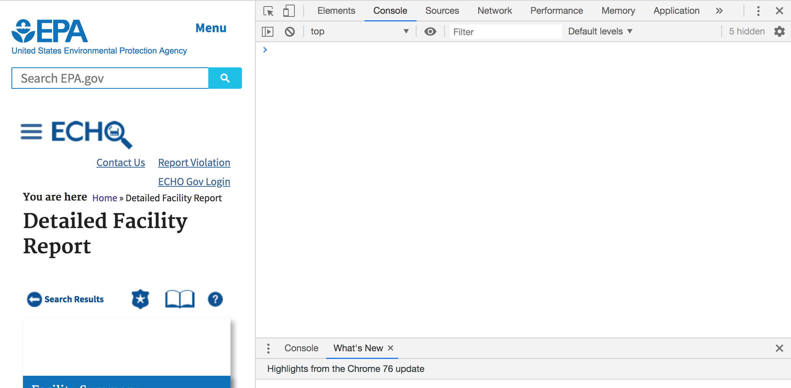
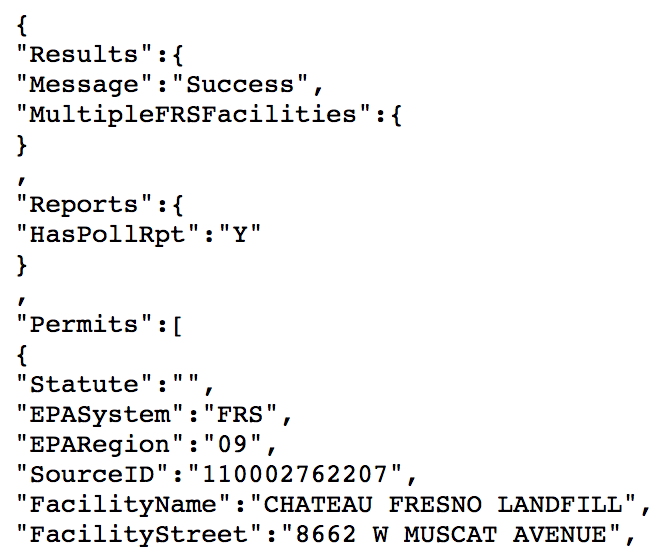

Our goal is to scrape information from the detailed faciltiy reports provided by the EPA. Here is an example of such a report that we will reference. For this tutorial, we will focus on scraping the demographic information located at the bottom of this page.
Our first attempt would be to directly use the Python requests library and use a get call to the link above. We would then examine the HTML elements and scrape the information in all the relevant tables. Unfortunately, this method does not work because this page is loaded by JavaScript. Making a request with this method would get the HTML before the JavaScript loads all of the data we want, so the demographics that we want will not appear.
Another approach would be to use Selenium to load the JavaScript and then scrape the HTML once the data we want is loaded. A detailed tutorial for this method can be found here. This method works, but is somewhat slow due to the need for a browser to fully load each page for us to scrape it. Our goal is to eventually scrape hundreds of thousands of facility pages, so we want to avoid any such slowdowns. What we will do instead is look at the JavaScript for this page to determine where the data is being loaded from and directly receive the data from there.
Our first step is to load the JavaScript console for this page. On Chrome, from the facility report page go to View-->Developer-->JavaScript Console. The console should appear on the right as below.

If we switch from the Console tab on the top to the Network tab, in the Name column you will see many files with the .js ending. Theoretically we may have to search through all these files to find the one that loads the data we want, but luckily they have descriptive names to help us narrow our search. In our case, the file we want to look at is dfr-main.js (dfr stands for Detailed Facility Report). If we open up this file in a new tab, we can look through it and see how the data is loaded by JavaScript. The first function in this file is called getDFR() and this is exactly where we will find our answers. Here is what the beginning of the function looks like:
function getDFR() {
// check if multiple dfrs loading
if (fIDArray.length > 1) {
// if yes, update loading status
document.getElementById('dfrLoadingStatusReport').innerHTML = currentLoadingFIDIndex + 1;
document.getElementById('dfrLoadingStatusReports').innerHTML = fIDArray.length;
}
// reset for each fIDValue
noQuarterlyData = true;
// get fid value from array
var fIDValue = fIDArray[currentLoadingFIDIndex];
// show dfr report
$('#dfr' + fIDValue).show();
$('.monthly').hide();
// build proxy url to query with fid
var myURL = 'app/proxy/proxy.php?s=dfr&p_id=' + fIDValue + (sys == '' ? '' : '&p_system=' + sys);
fIDValue = decodeURI(fIDValue).replace(' ', '');
if (Drupal.settings.environment == 'development') {
console.log(myURL);
}
// use ajax to post request
$.ajax({
url: myURL,
type: 'POST',
dataType: 'json',
contentType: 'application/json',
success: function(response) {
There are two extremely useful pieces of information we get from this code. The first is a new URL of the form "app/proxy/proxy.php?s=dfr&p_id=". Since we can see that the code later makes a request to this URL, we suspect (correctly) that this URL is where the code is loading the data from. The id we need to complete the URL we already know from the URL of the detailed facility report to be 110002762207. Before we visit this page to see what is there, we see from the bottom few lines of code that the data we expect to be in JSON form. When we load the url "https://echo.epa.gov/app/proxy/proxy.php?s=dfr&p_id=110002762207" we see the following:

This page contains a JSON file with everything we need! All that's left is getting the data from this page and figuring out how to run this for all the facilities.